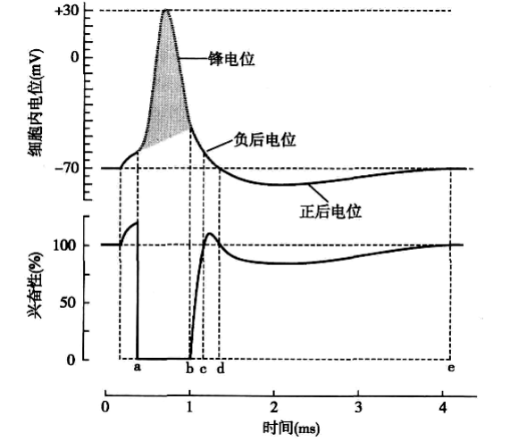

静息电位(resting potential)是可兴奋细胞处于未受到刺激的静息状态下, 细胞膜内外存在的电位差. 静息电位是安静情况下以\(\ce{K+}\)外流为主的多种离子转运的综合结果. 以下介绍静息电位的形成机制与电位量化计算方法.
钠泵提供了膜两侧的离子浓度差. 考虑膜对单一离子\(X\)的转运过程: 一开始, \(X\)在两侧浓度差的作用下, 由浓度高一侧流向浓度低一侧, 这一过程中膜两侧的电位差逐渐加大, 这一电位差阻碍\(X\)的流动, 与此同时浓度差逐渐减小1, 当电位差驱动力和浓度差驱动力相等时, 离子的过膜运动达到平衡状态.
形式化地说, 浓度差驱动力和电位差驱动力之代数和称为电化学驱动力. 这样, 以上过程实际上可以用电化学驱动力公式描述, 即电化学驱动力 = 浓度差驱动力 - 电位差驱动力.
理想状态下整个过程大致分为以下三个阶段:
平衡时的膜两侧电位差称为该离子的平衡电位或能斯特电位(Nernst potential), 可以通过能特斯公式(Nernst equation)计算得到: \[ E_X = \frac{RT}{ZF}\ln\frac{[X]_o}{[X]_i} \]
实际情况下, 膜两侧有许多离子参与, 膜也对许多离子具有通透性, 实际的平衡电位是各种的离子平衡电位对它们各自通透性的加权平均: \[ E_m = \frac{\displaystyle\sum{P_X E_X}}{\displaystyle{\sum{P_X}}} \] 在一般神经细胞细胞静息电位的形成过程中起到主要作用的是\(\ce{K+}\)和\(\ce{Na+}\)两种离子, 因而有 \[ E_m = \frac{P_\ce{K}}{P_{\ce K} + P_{\ce{Na}}}E_{\ce{K}} + \frac{P_\ce{Na}}{P_{\ce K} + P_{\ce{Na}}}E_{\ce{Na}} \]
静息时, 膜上非电压门控性\(\ce{K+}\)通道和非电压门控性\(\ce{Na+}\)通道开放, 由于前者的密度高于后者, 因此膜对钾离子的通透性高于对钠离子的通透性, 因此静息电位接近钾离子的平衡电位但偏向钠离子的平衡电位, 这一平衡电位因不同细胞中两类通道的比例不同而存在变化, 在神经细胞, 这一平衡电位约为\(-70\rm{mV}\).
动作电位(action potential)是指可兴奋细胞受到刺激后, 在静息电位的基础上产生的细胞膜内外电位. 动作电位的产生是细胞膜两侧离子的跨膜移动发生快速改变的结果.
下面以通道的工作模型(Hodgkin–Huxley model, H-H model)为理论基础介绍动作电位的产生过程. 动作电位主要是由电压门控\(\ce{Na+}\)通道和电压门控\(\ce{K+}\)通道的交替激活失活引起的.
电压门控\(\ce{Na+}\)通道有激活门(m门)和失活门(h门)两个串联排列的闸门, 静息状态下m门关闭而h门打开, 通道处于关闭状态. 细胞膜去极化到一定程度时2, m门迅速打开, h门开始缓慢关闭, 在h门完全关闭之前, 通道是打开的, 处于激活状态. h门关闭以后则进入失活状态. 以后m门关闭而h门打开, 回到静息状态(称为复活过程).
电压门控\(\ce{K+}\)通道只有一个激活门(n门), 但表现为延迟激活, 直到\(\ce{Na+}\)通道失活后才打开.
因此, 当膜去极化发生时, \(\ce{Na+}\)通道将随着去极化的程度而逐渐开放, 产生内向电流, 膜进一步去极化而形成正反馈过程, 与此同时, \(\ce{K+}\)的电化学驱动力得到加强, 产生\(\ce{K+}\)的外向电流, 如果\(\ce{Na+}\)正反馈的内向电流太弱以至于无法对抗\(\ce{K+}\)的外向电流的话, 动作电位就不会发生, 只有当去极化达到阈电位水平时(意味着这时候\(\ce{Na+}\)的内向电流正反馈速度足以抵抗\(\ce{K+}\)通道所产生的外向电流), \(\ce{Na+}\)的正反馈将产生一过性内向电流, 形成锋电位的升支. 到达锋电位顶端后, \(\ce{Na+}\)通道失活, 电压门控\(\ce{K+}\)通道大量开放, 形成了锋电位的降支. 如果电压门控\(\ce{K+}\)通道开放的时间较长, 那么就会在恢复到静息电位以后\(\ce{K+}\)继续外流而形成正后电位.
动作电位过程中细胞的兴奋性发生的变化:
锋电位: 绝对不应期. 产生原因: 锋电位的升支, 大部分\(\ce{Na+}\)通道都已经激活, 不存在再激活的问题, 锋电位的降支, 大部分的\(\ce{Na+}\)通道处于失活状态, 不可能被激活.
负后电位的前半段: 相对不应期. 产生原因: \(\ce{Na+}\)通道开始复活, 但是复活量比较少, 需要足够强的电位差才能够激活足够的\(\ce{Na+}\)通道引起动作电位.
负后电位的后半段: 超常期. 产生原因: \(\ce{Na+}\)通道完全复活, 膜电位却没有回到静息电位, 和阈电位的差值比平时小, 只需要给一个阈下刺激就可以再次产生动作电位.
正后电位: 低常期. 产生原因: 膜电位处于超极化状态, 和阈电位的差值比平时大, 必须给予阈上刺激才可以再次产生动作电位.